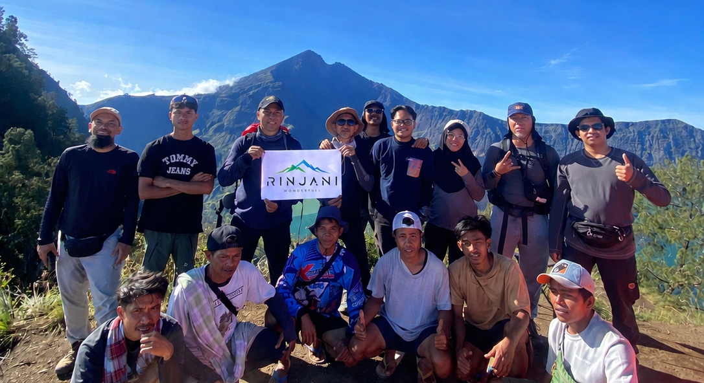

Step beyond the mountain. Immerse yourself in the cultural heart of North Lombok, explore majestic twin waterfalls, and walk through endless rice terraces.
Duration
1 Full Day
Difficulty
Easy / Family Friendly
Location
Senaru & Bayan, Lombok
Focus
Nature & Culture
From the refreshing spray of the waterfalls to the rhythmic beat of traditional drums, discover the true soul of North Lombok.

Begin your day with a light jungle trek to visit the majestic Sendang Gile and the breathtaking Tiu Kelep waterfalls. Feel the refreshing mist from the mountain springs.

Step back in time at Masjid Kuno Bayan, the oldest historical mosque in Lombok. Discover the roots of the unique Wetu Telu Islamic heritage and architecture.

Watch the skilled hands of local women practicing the ancient art of Kesenian Tenun Bayan. See how colorful threads are woven into beautiful traditional Sasak fabrics.
Experience the thunderous and highly rhythmic Gendang Beleq. This traditional Sasak drum ensemble was historically used to send warriors into battle.
*Note: Subject to local events/availability.
Witness Presean, the thrilling traditional martial art of Lombok where two fighters (pepadu) duel using rattan sticks and buffalo skin shields.
*Note: Subject to local events/availability.

Walk through authentic indigenous architecture. We will visit several traditional housing compounds located across Senaru Village and Karang Bajo Village.

Take a serene and peaceful stroll traversing expanses of lush green rice fields (Hamparan Sawah). Capture the perfect postcard picture with Mount Rinjani in the backdrop.
Wash away the tropical heat by bathing in a pristine, crystal-clear pool sourced directly from a natural mountain spring located in Dusun Mandala.
Wind down your day with good food, cold drinks, and cozy acoustic Live Music at one of the vibrant local cafes surrounding the Senaru area.
Perfect for families, couples, or as an acclimatization day before your big Rinjani climb. Our local expert guides will ensure you see the hidden sides of Lombok.